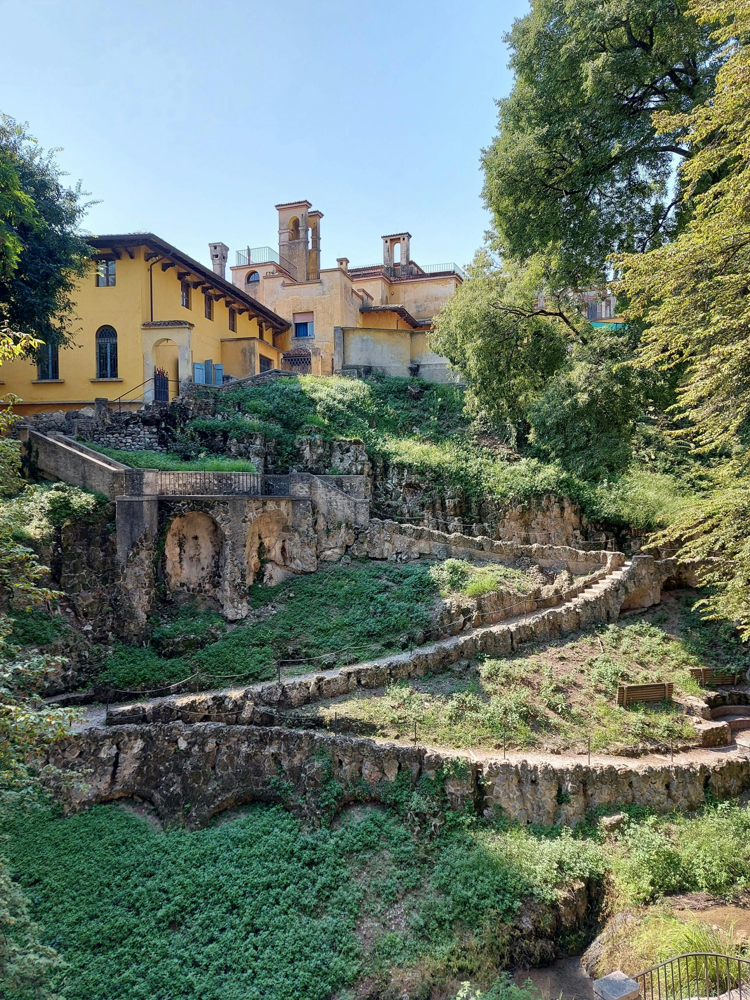

We are an independent real estate agency based in Tivoli, 30 km from Rome. Since 1994 we have helped Italian and foreign buyers find — and own — homes near Villa d'Este and Hadrian's Villa.
Talk to usWe are not a franchise. We live in Tivoli, we know every street, every notary, every reliable contractor. Three decades of trust in the same city.
From the first viewing to the deed signing. Mortgage for non-residents, fiscal code, Italian bank account, notary appointments — we coordinate everything.
No inflated estimates to win a mandate. Real market data of the Tivoli area, transparent pricing, no hidden fees. You decide, with the right information.

Villa Gregoriana, TivoliTivoli is a UNESCO-listed city of stone, gardens and water. Villa d'Este and Hadrian's Villa are at walking distance from the historic center. Trains and the Roma–L'Aquila motorway connect to the capital in 30 minutes.
It's a real Italian town — not a resort. People live here year-round. Real estate prices are still rational compared to central Rome, with strong rental demand from professionals and short-term visitors.
Tell us what you're looking for — budget, area, use. We send you a curated shortlist of properties from our portfolio and the Tivoli market, with honest notes on each.
Visit in person, or join us for a video walkthrough if you're abroad. We point out the things photos hide: heating, condominium, sun exposure, neighborhood.
We coordinate the practical steps for non-residents: tax code (Agenzia delle Entrate), opening an Italian bank account, and — if needed — a mortgage with our partner banks for foreign buyers.
We negotiate on your behalf. Then we draft the preliminary contract (compromesso) and run a full due diligence: title, mortgages, condominium debts, urban compliance.
At the notary, with English interpretation if needed. We're with you on the day, and after — for utilities transfer, property management, and any rental setup.
The things our international clients always ask.
Yes. EU citizens have the same rights as Italians. Non-EU citizens can buy as long as Italy has a reciprocity agreement with their country (UK, US, Canada, Australia, most countries — yes). We verify reciprocity for you.
No. You can sign a procura speciale (power of attorney) — often issued at an Italian consulate abroad — that lets a trusted person sign on your behalf. We coordinate the consulate appointment and notary.
For non-residents buying a property as a second home: registration tax 9% on cadastral value (usually well below market price). Plus VAT only if buying from a builder. Plus notary fees (~1-2%) and our commission. We give you a written estimate before any commitment.
Yes, with limitations. Italian banks typically finance up to 50-60% of the purchase price for non-residents, with floating or fixed rate. We work with banks experienced in foreign buyers and can introduce you.
From around €70,000 for a small apartment in nearby Castel Madama, to €150,000–250,000 for a renovated apartment in Tivoli's historic center, up to €500,000+ for a villa with garden and Aniene valley views.
Yes. We can handle utilities transfer, condominium meetings on your behalf, and full short-term rental management (Airbnb, Booking) if you want to monetize when you're not using the property.
No commitment. Tell us what you're looking for and we'll send you a curated shortlist within a few days.